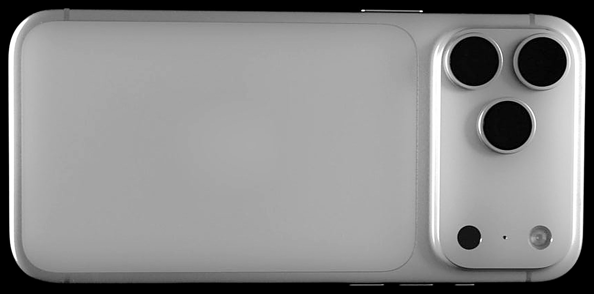
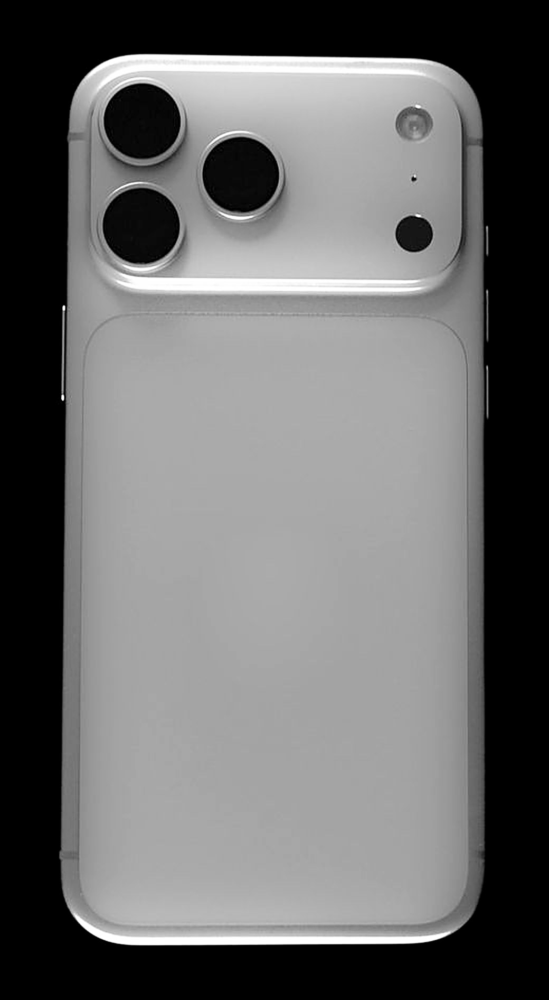
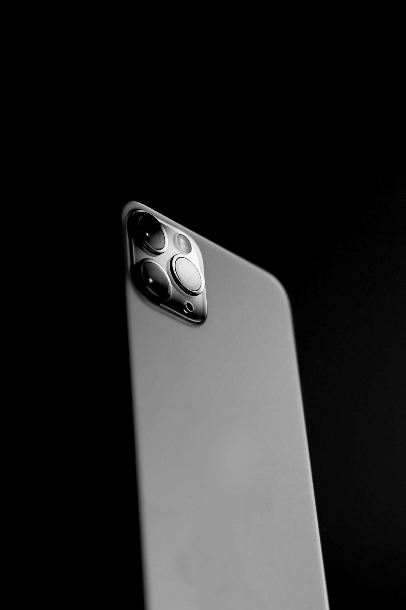

Nácar Faro
The light that stays on.
Design
One bar of titanium,
finished like pearl.


Camera
Made for the hours
after dark.
The 50MP main camera has an aperture that opens and closes with the light, wide at ƒ/1.4 when the street goes dim, tight at ƒ/4 when the whole valley needs to be sharp. A 5× telephoto and a 48MP ultra wide fill in the rest of the scene.
Main camera
50MP
Variable aperture sensor, larger than any Faro before
Widest aperture
ƒ/1.4
For light the eye can barely find
Telephoto
5×
Optical zoom at 120 mm, sharp at night
Night video
4K60
Night mode, now in every frame of video
Small things, well lit.
Beacon SOS. No signal, no problem. Faro finds a satellite and sends where you are.
Beacon key. Press once and the torch comes on. Hold it to open the camera.
Ring charging. Magnets snap it into place, and 25W wireless does the rest.
IP68. Six metres of water for 30 minutes. Monsoon, handled.
Stays lit for two days.
Battery
48 hrs
Of mixed use from one charge of the 5,100 mAh cell
Fast charge
60%
In 25 minutes on a 45W adapter
F3 chip
4.2GHz
Peak clock across six CPU cores, built on 3 nm
Peak brightness
3,000
Nits on the 6.7-inch display, readable in midday sun
Take the light home.
Nácar Faro from ₹1,19,900, or ₹9,992 a month for 12 months with no-cost EMI.
In Nácar or Grafito, with 256GB, 512GB or 1TB.